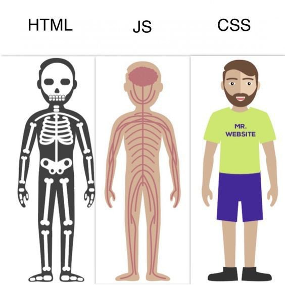
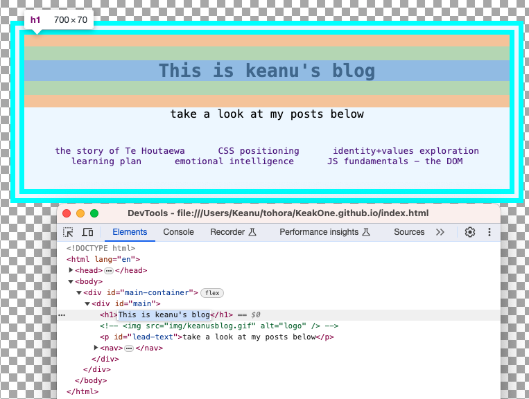
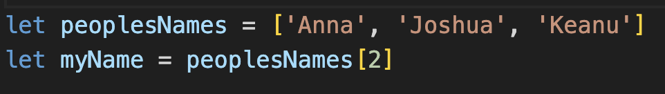
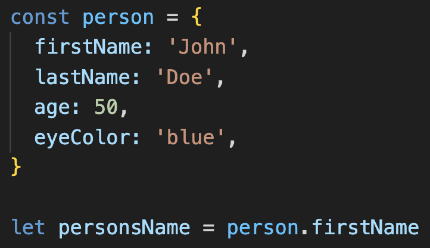

Javascript Fundamentals - The DOM
For this post I'll be talking a bit about some of the basics of javascript & the DOM
25 January 2024
Javascript and how it relates to to HTML & CSS
Javascript is often thought of as the "action" behind a webpage. Meaning that if you fill out a form, click a button, add something to a watchlist- all of these things are making little actions happen behind the scenes that gives a webpage its interactivity, and thats all thanks to Javascript!
One of the most common analogies for how HTML, CSS & Javascript fit together is the human body- skeleton, beauty and the brain. The HTML is the strong foundation of a skeleton, it gives space and outlines where everything else in the body goes. The CSS is our outward appearance, our hairstyle, eye-colour and fashion choices. Javascript is the brain; the thinking, the logic, the thing that controls our decision making and how we respond to everything.
Control flow
In computer programming control flow refers to the order that your pieces of code (functions, statements etc) run in. Computers are amazing at running instructions on their own, but arent too good at making decisions. It's our job as programmers to provide lots of sets of instructions to our computer friends, and the conditions for when to use each set. having "good" control flow means your code is more flexible and readable, and accounts for lots of situations.
The best analogy I could find is imagining traffic lights. When we come to a traffic light there are 3 options(possible sets of instructions); green, red or orange light. Each of these lights give you the instructions of what to do next to control the flow of traffic. This is similiar to programming control flow because its putting checks in place to make sure its safe to proceed with your code.
Loops
Loops are used in programming to repeat an action some number of times until they are told to stop. We give them a set of conditions that as long as theyre met, they will just keep running and doing whatever piece of code we have writtin inside them. as soon as those conditions aren't met, the loop will stop. A concrete example of a loop could be washing dishes;
when we wash dishes we mostly repeat the same cleaning action until we run out of dishes to wash, you can imagine the loop running like this; 1 - check if there are any dirty dishes left, if yes, go to step 2; if not you've finished! end the loop. 2 - get the dirty dish and wash it, then go back to step 1. In this example you can see how loops are ideal for repeating simple actions again and again until you reach an ending condition (in this example its running out of dishes).
What is the DOM?
The document object model (DOM) is pretty much everything you see inside of your browser tab window. It's a big tree of all the objects inside that website, and gives javascript a bunch of ways to hook into the different parts of a website by interacting with these objects.
The DOM gives developers a really easy way to find and make changes to parts of the HTML. The simplest way of seeing this in action is by "inspecting" elements and temporarily changing them. By right clicking and selecting inspect, you pull up the devtools. Right there you should see a list of all the HTML, and be able to select elements and make small changes, and you will instantly see those applied in the DOM! This is always temporary when using devtools but can be permanent or more dynamic when using Javascript.
using devtools to highlight and change the H1
Arrays & Objects
Arrays and objects are simply containers used to store data. Arrays are more like a simple list, where you have an amount of items within them, and to access those items you referance an "index", or what number the item you want appears in the list order.
In the above example, we have an array of three names, and to access and assign the correct name to the variable "myName" we simply put the index in using square brackets. But wait! theres 3 names in the array, but to access the last one we only gave it 2? This is because Arrays begin counting at 0! Something that will definatly catch you out in the beginning.
Objects are slightly more complicated, but at the end of the day are just a way to store information as well. They use key value pairs so you can match a name and a value together, making it easier to access in the future.
In the above example I've made a "person" object, and given some keys and values to build the properties of this object. At the bottom you can see how easy having these key value pairs makes accessing the properties, as I can look into the object and pull out properties by simply writing "person.firstName" - "person" referancing the object we made, and "firstName" representing a property we created.
Fun-ctions
I think the simplest definition of a function is a block of code that performs a specific task. you write a set of actions that happen when the function is "called"(told to run), and everytime you call it, that same set of actions happens again.
Functions are super useful as they can cut out having to write the same code over and over. Let's say in your javascript you constantly have to add two strings together, and all throughout your code you've written the same thing at multiple times to add strings together. By writing a single function that does this once, and then calling it when you need to add strings together, You've not only reduced the complication of your code, but made it more reusable.
By using functions correctly you dont need to write heaps of lines of code to do a common task, and make your code more reusable and modular!